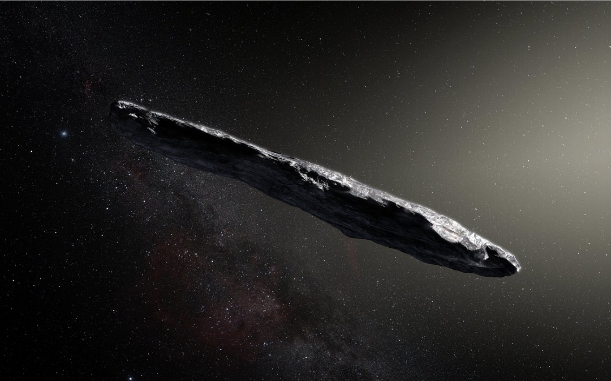

Forrige side🙂 🙁Kjeglesnitt
Det er først nå i det siste at man har oppdaget slike objekter. Det aller første ble oppdaget i 2017 og ble kalt Oumuamua. Her er en kunstrisk fremstilling av hvordan objektet kan se ut (credit: ESO/M. Kornmesser)
 Neste side